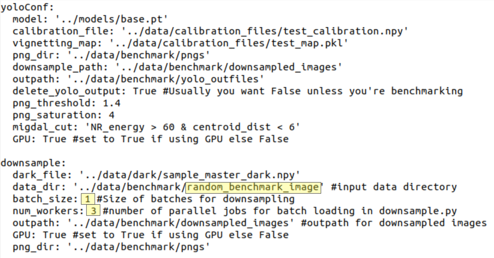
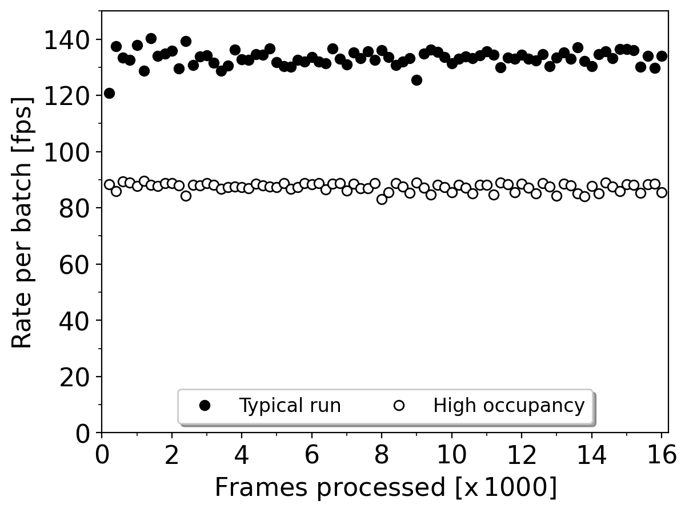

Benchmarking processing speed
Note: GNU Screen is required to run the benchmark script.
The migYOLO/migYOLO/benchmark/ directory has a sample benchmark script called runBenchmark.sh that can be used to generate the output shown in Fig. 7 of the paper.
Benchmarks
The highlighted fields of benchmarkConf.yaml shown below can be adjusted for various tests:

data_dir: ../data/benchmark/random_benchmark_imagecorresponds to the “Typical run” entry in the legend of the figure belowSetting
data_dir: ../data/benchmark/high_occupancy_imagecorresponds to the “High occupancy run” entry in the legend of the figure belowThe defaults of
batch_size: 1andnum_workers: 3are the values used for benchmarking the processing speed on the MIGDAL readout PC

Running the benchmark
Navigate to migYOLO/migYOLO/benchmark and run source runBenchmark.sh. The script will prompt you on how many images you would like to benchmark. After running the script, a directory called timestamps/ will generate text files containing timestamps. The elapsed time between two successive timestamp files is the time it took to process 200 frames. These timestamp files are what were used to create the figure above.
Two important notes
1. As stated above, GNU screen is required to run runBenchmark.sh.
2. Each time runBenchmark.sh is run, the timestamps/ directory is deleted. The explicit code for generating the figure above is also not included here.